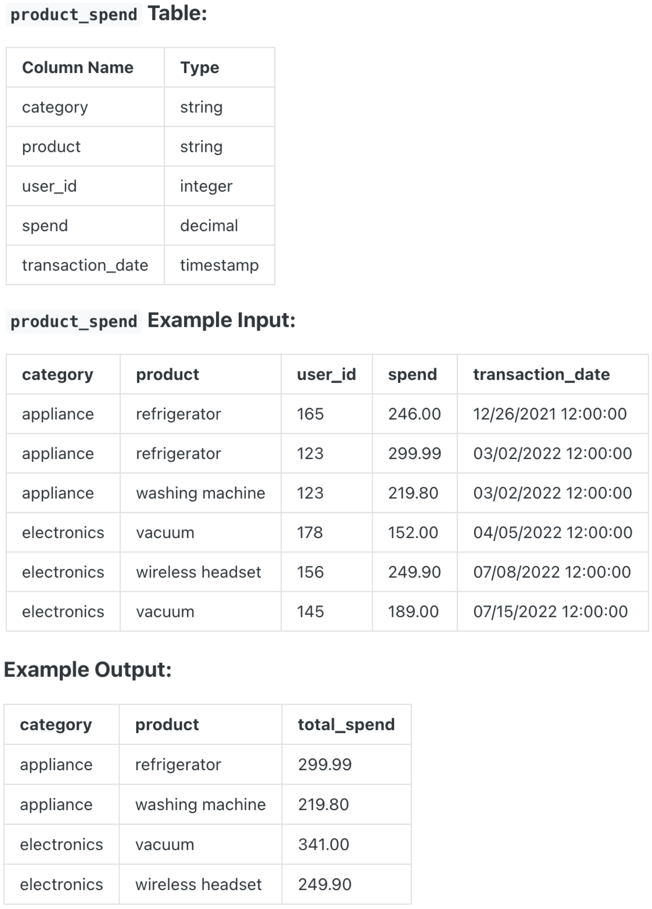

Question sourced from DataLemur.com.
Database: PostgreSQL
Assume you're given a table containing data on Amazon customers and their spending on products in different category, write a query to identify the top two highest-grossing products within each category in the year 2022. The output should include the category, product, and total spend.

/*
My strategy: Create a CTE where data is filtered by year (2022),
grouped by category and product, aggregated by total spent, and
ranked by total spent (descending) within a category. Then filter
the CTE by the top two products in each category.
*/
WITH spend_totals_ranked AS (
SELECT category, product, SUM(spend) AS total_spend,
DENSE_RANK() OVER (
PARTITION BY category
ORDER BY SUM(spend) DESC
) AS spend_rank
FROM product_spend
WHERE EXTRACT(YEAR FROM transaction_date) = 2022
GROUP BY category, product
)
SELECT category, product, total_spend
FROM spend_totals_ranked
WHERE spend_rank IN (1, 2);
/*
Note: I chose to use DENSE_RANK so rank 2 is not skipped,
in case of ties.
*/